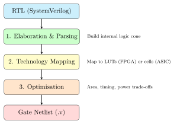

Chapter 8: Synthesis¶
Synthesis is the translation of your RTL (register-transfer level) description into a gate-level netlist — a list of primitive logic gates, flip-flops, and multiplexers connected by wires, taken from a technology library.
Analogy: Synthesis is Like a Compiler
Just as a C compiler turns your source code into machine instructions for a specific CPU, a synthesis tool turns your SystemVerilog into logic gates for a specific technology (FPGA LUTs or ASIC standard cells). The synthesis tool is smarter than a compiler: it re-arranges, shares, and optimises logic to meet your timing and area targets.
8.1 What Happens During Synthesis¶
Synthesis consists of three main steps:

- Elaboration
- The tool reads your SystemVerilog, resolves parameters, expands
generateblocks, and builds an internal representation (a network of boolean functions). - Technology Mapping
- The tool maps each boolean function to available primitives: LUTs for FPGAs, or standard cells (NAND2, DFF, MUX) for ASICs. This step reads the liberty file (.lib) which describes every cell’s function, timing, and power.
- Optimisation
- The tool applies algebraic transformations, logic sharing, retiming (moving registers to shorten critical paths), and constant propagation to meet timing targets while minimising area and power.
8.2 Yosys — Open-Source Synthesis¶
Yosys is the primary open-source synthesis tool, used for both FPGA and ASIC flows. It supports SystemVerilog (via the read_verilog -sv command) and has backends for Sky130, GF180, and generic gates.
8.2.1 Sky130 Synthesis Script¶
The file eda/yosys/synth_sky130.ys synthesises a design for Sky130A:
# Read the design
read_verilog -sv rtl-templates/peripherals/uart_16550.sv
# Set the top-level module
hierarchy -check -top uart_16550
# Generic synthesis passes
proc # Convert always blocks to logic
flatten # Inline all module hierarchy
tribuf # Handle tri-state buffers
opt_clean # Remove unused cells and signals
opt # Boolean optimisation
fsm # FSM optimisation (encode states better)
opt # Optimise again after FSM changes
memory # Infer memories (SRAMs, FIFOs)
opt_clean
# Technology mapping
# Step 1: Map flip-flops to Sky130 DFF cells
dfflibmap -liberty $PDK_ROOT/sky130A/libs.ref/sky130_fd_sc_hd/lib/\
sky130_fd_sc_hd__tt_025C_1v80.lib
# Step 2: Map logic to Sky130 standard cells via ABC
abc -liberty $PDK_ROOT/sky130A/libs.ref/sky130_fd_sc_hd/lib/\
sky130_fd_sc_hd__tt_025C_1v80.lib \
-constr eda/yosys/sky130_abc.constr
# Final cleanup
opt_clean
clean
# Write outputs
write_verilog -noattr gdsii/outputs/uart_16550_netlist.v
stat # Print area statistics
8.2.2 Running Yosys¶
# Generic synthesis (technology-independent, good for quick checks)
bash scripts/bash/synth_yosys.sh uart_16550 \
rtl-templates/peripherals/uart_16550.sv generic
# Sky130 ASIC synthesis
bash scripts/bash/synth_yosys.sh uart_16550 \
rtl-templates/peripherals/uart_16550.sv sky130
# Direct Yosys invocation
yosys -s eda/yosys/synth_sky130.ys
8.2.3 Reading the Statistics Output¶
After synthesis, Yosys prints a statistics summary:
=== uart_16550 ===
Number of wires: 1234
Number of wire bits: 5678
Number of public wires: 45
Number of cells: 812
sky130_fd_sc_hd__a21oi_2 48 <- AND-OR-INVERT gate
sky130_fd_sc_hd__dfxtp_2 216 <- D flip-flop
sky130_fd_sc_hd__inv_2 89 <- Inverter
sky130_fd_sc_hd__mux2_4 34 <- 2-input mux
sky130_fd_sc_hd__nand2_4 78 -- and more...
Chip area for module 'uart_16550': 47,832 um^2
(approx. 0.048 mm^2 in Sky130A)
Interpreting the numbers:
-
The 216 DFF cells correspond to the flip-flops in the UART’s TX/RX FIFOs, state machines, and registers.
-
The 48 mm\(^2\) area is about 6.9 mm \(\times\) 6.9 mm — tiny compared to the full Caravel user project area (a historical Efabless shuttle template) of 2.65 mm \(\times\) 2.92 mm.
-
The cell count (812) is a measure of design complexity. A simple processor like PicoRV32 is \(\sim\)2500 cells; a CVA6 is \(\sim\)100,000 cells.
8.3 Vivado Synthesis (FPGA)¶
For Xilinx FPGAs, Vivado’s synthesis maps to LUTs instead of standard cells. The relevant commands are inside fpga/xilinx-artix7/build_arty_a7.tcl:
synth_design \
-top uart_16550 \
-part xc7a35ticsg324-1L \ # Target device
-flatten_hierarchy rebuilt \ # Flatten for optimisation
-fsm_extraction one_hot \ # One-hot FSM encoding
-directive PerformanceOptimized # Prioritise speed over area
8.3.1 Synthesis Directives¶
| Directive | Effect |
|---|---|
Default |
Balanced speed and area |
PerformanceOptimized |
Maximum timing performance, ignores area |
AreaOptimized_medium |
Reduce LUT count at the cost of timing |
RuntimeOptimized |
Fast synthesis for quick checks (less optimal result) |
AlternateRoutability |
Change netlist to improve place-and-route |
8.4 Understanding the Netlist¶
After synthesis, you have a gate-level netlist. Here is a tiny fragment of what the UART FSM looks like after mapping to Sky130A cells:
// Auto-generated by Yosys --- do not edit!
// This is what the synthesis tool produces from your FSM code.
// Flip-flop for state bit [0]
sky130_fd_sc_hd__dfxtp_2 \tx_state_reg[0] (
.D (\tx_state[0]$next ),
.Q (tx_state[0]),
.CLK(clk)
);
// NAND gate for next-state logic
sky130_fd_sc_hd__nand2_4 \tx_nxt[0] (
.A(tx_state[1]),
.B(\baud_tick ),
.Y(\tx_state[0]$next_n )
);
// Inverter
sky130_fd_sc_hd__inv_2 \tx_inv[0] (
.A(\tx_state[0]$next_n ),
.X(\tx_state[0]$next )
);
This is not intended to be human-readable — it is the input to the physical design tools.
8.5 Liberty Files — Describing Standard Cells¶
The liberty file (.lib) is the synthesis tool’s bible for a given technology. It describes every cell:
cell (sky130_fd_sc_hd__nand2_4) {
area : 3.745; /* Cell area in um^2 */
cell_leakage_power : 0.012; /* Static power in uW */
pin (A) { direction : input; }
pin (B) { direction : input; }
pin (Y) {
direction : output;
function : "!(A B)"; /* Y = NOT(A AND B) */
timing () {
related_pin : "A";
cell_rise (template_7x7) { /* Lookup table for
values("0.0128, 0.0322, ..."); /* rise delay */
}
cell_fall (template_7x7) { ... }
}
}
}
The timing tables allow the synthesis (and later the STA) tool to calculate the exact propagation delay through any combination of cells.
8.6 ABC — The Logic Optimiser¶
ABC (A System for Sequential Synthesis and Verification) is the optimisation engine inside Yosys. It applies hundreds of Boolean optimisation passes to minimise the number of cells while meeting timing constraints:
# Tells ABC that the target clock period is 10 ns (100 MHz)
# so it knows which paths are critical
set_driving_cell sky130_fd_sc_hd__buf_4
# Maximum output load
set_load 0.5
# Target clock period for timing-driven optimisation
clock 10.0
8.7 Summary¶
-
Synthesis translates RTL (SystemVerilog) into a gate netlist.
-
Yosys is the open-source synthesis tool used for Sky130/GF180 ASIC flows.
-
Vivado synthesis maps to Xilinx LUTs for FPGA targets.
-
The liberty file (.lib) describes cell timing, area, and power.
-
ABC is the core logic optimiser — it minimises cells while meeting the target clock period.
-
After synthesis you have a gate netlist — the input to physical design (Chapter 9).